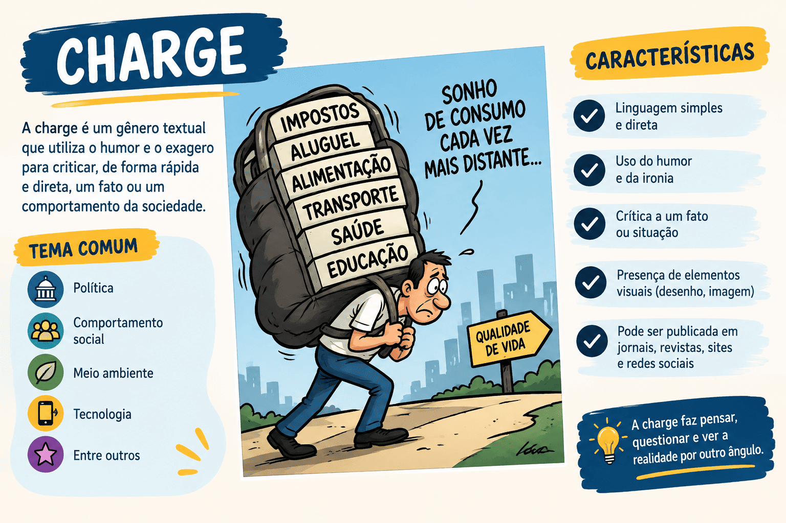

Charge: O que é o Gênero Textual, Características e Como Interpretar
Se você acompanha o noticiário ou já abriu uma prova do ENEM, com certeza já se deparou com ela. A charge é aquele desenho instigante, muitas vezes ácido e engraçado, que resume um escândalo político ou um problema social da semana em apenas um quadro.
No entanto, interpretar uma charge em provas de vestibulares exige muito mais do que apenas "entender a piada". A charge é um gênero textual jornalístico que depende intimamente do seu repertório sociocultural. Se você não souber o que está acontecendo no Brasil e no mundo naquele exato momento, a charge perde totalmente o sentido.
A palavra "charge" vem do francês charger, que significa "carga" ou "exagero". E é exatamente isso que ela faz: carrega nas tintas, deforma os traços físicos de pessoas públicas (caricatura) e exagera as situações para expor uma crítica contundente.
Neste conteúdo, você vai aprender o que é o gênero textual charge, suas principais marcas linguísticas (como a efemeridade e a intertextualidade) e como garantir seus pontos não a confundindo com o cartum.

O que é o gênero textual Charge?
A charge é um gênero textual jornalístico, de caráter humorístico e crítico, que utiliza a linguagem mista (verbal e não verbal) para satirizar um acontecimento atual. Ela é publicada em jornais, revistas e portais de notícias, funcionando como uma espécie de "editorial ilustrado", onde o chargista expressa uma opinião contundente sobre um fato político, econômico ou social recente.
Charge é um texto visual opinativo e datado. Ela faz referência direta a um fato específico e a pessoas reais (geralmente figuras de poder), utilizando o exagero (caricatura) para provocar o riso crítico.
Quais são as principais características da Charge?
Para não confundir a charge com outros tipos de quadrinhos e ilustrações, você precisa identificar as seguintes marcas estruturais e temáticas:
Marcas linguísticas e estruturais
- Factualidade e Efemeridade: A charge tem "prazo de validade". Ela nasce de uma notícia quente. Uma charge feita sobre um escândalo político de 2015 pode não fazer o menor sentido para um leitor em 2026, pois o contexto já passou. Ela é datada.
- Personagens Públicos: Diferente do cartum (que usa pessoas anônimas), a charge retrata pessoas reais e conhecidas do grande público: o Presidente da República, ministros, celebridades, jogadores de futebol.
- Caricatura (Exagero): O chargista distorce e exagera os traços físicos ou comportamentais das pessoas reais (um nariz enorme, um queixo pontudo) para ridicularizar ou enfatizar um defeito.
- Linguagem Mista: Combina o texto não verbal (desenho, expressões faciais, cenário) com o texto verbal (balões de fala, letreiros, legendas).
- Intertextualidade: A charge sempre dialoga com outro texto prévio (a notícia). Sem conhecer a notícia original, a interpretação fica comprometida.
O perigo na prova do ENEM
Quando o ENEM coloca uma charge antiga na prova, ele sempre fornece um pequeno texto de apoio ou uma data específica no rodapé da imagem. O segredo para acertar a questão é ler esse rodapé e conectar a crítica da charge ao momento histórico em que ela foi publicada!
Charge vs. Cartum: A diferença definitiva
As bancas adoram testar se você sabe diferenciar o humor gráfico. A regra é simples, baseada no tempo e nas pessoas:
Charge
Tempo: Datada/Efêmera (envelhece com a notícia).
Foco: Um fato específico recente.
Personagens: Figuras públicas e reais (políticos, famosos).
Exemplo: Um desenho ironizando a fala infeliz de um ministro da saúde na última terça-feira.
Cartum
Tempo: Atemporal (não envelhece).
Foco: Comportamento humano e temas universais.
Personagens: Pessoas comuns e anônimas (o marido, a chefe, o médico).
Exemplo: Um desenho ironizando o fato de que as pessoas passam mais tempo no celular do que conversando com a família.
Como interpretar Charges em provas?
Siga este roteiro mental ao se deparar com uma charge no vestibular:
- Olhe a data: Leia as letrinhas miúdas no rodapé (a referência bibliográfica). O ano de publicação te diz qual é o contexto histórico.
- Identifique os alvos: Quem está sendo caricaturado? É um político? O povo? Um empresário?
- Analise o exagero: O que o artista exagerou no desenho? O tamanho de um objeto? Uma expressão de ganância? A ironia mora no exagero.
- Faça a ponte: Conecte a imagem verbal e não verbal com o fato social/político da época.
Questão de aplicação
Questão: (Mestre Kira / Inédita) Considere uma ilustração publicada na página de opinião de um jornal de grande circulação no ano de 2020. A imagem, desenhada em um único quadro, apresenta a caricatura de um governador amplamente conhecido segurando uma seringa quebrada, enquanto tenta se esconder atrás de uma montanha de notas de dinheiro. Apenas pela descrição temática e estrutural, esse texto classifica-se predominantemente como:
- Cartum, pois aborda o tema universal e atemporal da corrupção, sem ligação com notícias recentes.
- Tirinha, uma vez que utiliza o humor visual para construir uma narrativa que exige a passagem de tempo em quadros.
- Charge, visto que utiliza a caricatura de uma figura pública e a linguagem visual para fazer uma crítica ácida a um fato político/social específico e datado.
- Texto injuntivo, pois tem a finalidade de orientar o leitor sobre os perigos da corrupção na área da saúde.
- Artigo de opinião, já que se encontra na página de opinião do jornal e defende um ponto de vista utilizando exclusivamente a linguagem verbal.
Resolução
A alternativa correta é a 3 — Charge, visto que utiliza a caricatura de uma figura pública...
O texto descreve perfeitamente a anatomia da charge: está vinculada a uma figura real (um governador conhecido), usa a caricatura (exagero) e faz uma denúncia crítica (corrupção na compra de seringas) ligada a um fato noticioso de uma época específica (2020). Não é cartum porque retrata uma figura pública específica, e não é tirinha porque possui apenas um quadro.
Resumo: O que não esquecer sobre a Charge
A charge é o "editorial em forma de desenho" de um jornal.
- Estrutura: Linguagem mista (verbal e não verbal) em quadro único.
- Tempo: Totalmente dependente do momento atual (fato jornalístico).
- Recursos: Humor, ironia, sarcasmo e, principalmente, a caricatura.
- Na prova: A charge exige que o leitor ative seu conhecimento de mundo e de atualidades para decifrar a crítica oculta no desenho.
Continue estudando Produção Textual e Gêneros Visuais
Referências
ROMUALDO, Edson Carlos. Charge jornalística: intertextualidade e polifonia. Maringá: Eduem.
RAMOS, Paulo. A leitura dos quadrinhos. São Paulo: Contexto.
Explore Outros Conteúdos
Continue seus estudos acessando outras seções do site Mestre Kira: